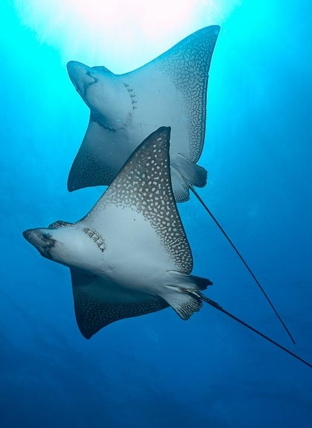

La Raya Águila Moteada (Aetobatus narinari): El Majestuoso Habitante de los Océanos Tropicales
Introducción
La raya águila moteada, conocida científicamente como Aetobatus narinari, es uno de los animales marinos más fascinantes y enigmáticos que habitan los océanos tropicales y subtropicales alrededor del mundo. Esta especie destaca no solo por su tamaño imponente, sino también por su elegante forma de desplazarse y su característico patrón de manchas blancas que parecen pintadas a mano sobre un fondo oscuro. La combinación de estos rasgos convierte a esta raya en un verdadero espectáculo visual que atrae la atención de biólogos marinos, fotógrafos submarinos, buceadores y entusiastas de la naturaleza por igual.
Pero la raya águila moteada no es solo belleza superficial: es una pieza fundamental en la estructura ecológica de los arrecifes y ecosistemas costeros donde habita. Su papel en el equilibrio del ecosistema marino, su compleja biología reproductiva y su relación con el entorno la hacen una especie digna de estudio y conservación.
En este artículo exploraremos detalladamente la clasificación científica, morfología, hábitat, comportamiento, alimentación, reproducción, amenazas actuales y esfuerzos para proteger a esta increíble especie. También compartiremos curiosidades y datos interesantes que te ayudarán a comprender mejor a esta maravilla marina y la importancia de su preservación para el futuro de nuestros océanos.
Además, abordaremos la interacción entre humanos y raya águila moteada, desde la convivencia pacífica en actividades de ecoturismo hasta los riesgos que enfrenta debido a la pesca indiscriminada y la degradación ambiental.
Clasificación científica
- Reino: Animalia
- Filo: Chordata
- Clase: Chondrichthyes (peces cartilaginosos)
- Orden: Myliobatiformes
- Familia: Myliobatidae
- Género: Aetobatus
- Especie: Aetobatus narinari
Morfología y características físicas
El cuerpo de la raya águila moteada está perfectamente adaptado para la vida en los arrecifes y fondos marinos arenosos. Su disco pectoral tiene una forma característica de diamante o ala, con bordes redondeados y un “hocico” o proyección frontal que utiliza para detectar y capturar presas escondidas en la arena. La piel es lisa y está cubierta por un fino manto de mucosa que reduce la fricción al nadar.
Tamaño y peso
- Alcanzan un tamaño impresionante, con anchos de disco que pueden superar los 3 metros.
- Su longitud total, contando la cola, puede llegar a medir más de 4 metros.
- El peso puede oscilar entre 150 y 200 kilogramos, dependiendo de la edad y el sexo.
Coloración y patrón único
El patrón de manchas blancas o crema sobre un fondo oscuro es tan distintivo que los científicos usan estas marcas para identificar individuos, de manera similar a cómo se usan las huellas dactilares en humanos. Este camuflaje les ayuda a esconderse de depredadores y a sorprender a sus presas.
Adaptaciones especiales
- Aletas amplias: Permiten un movimiento ondulatorio y elegante, similar a las alas de un águila, que le dan su nombre común.
- Cola con espinas: Posee una o más espinas venenosas para defensa, aunque solo las usa en casos extremos.
- Sensores electrorreceptores: Como todos los peces cartilaginosos, cuentan con ampollas de Lorenzini que detectan campos eléctricos emitidos por otros animales, ayudándoles a localizar presas enterradas.
Distribución geográfica y hábitat natural
La raya águila moteada habita principalmente en aguas tropicales y subtropicales de todo el mundo, con una distribución que abarca diversas regiones marinas.
Regiones principales
- Océano Pacífico: Desde las costas del Pacífico oriental, incluyendo México, Centroamérica y Sudamérica, hasta las aguas alrededor de Australia y las islas del Pacífico.
- Océano Índico: Presente en las costas este de África, el sur de Asia y las islas adyacentes.
- Atlántico occidental: En menor medida, se encuentra en zonas tropicales de este océano.
Tipo de hábitat
- Arrecifes de coral: Son su lugar preferido para buscar alimento y descansar debido a la abundancia de presas y refugios.
- Lagunas y estuarios: Frecuentan estas áreas donde el agua es más calmada y rica en nutrientes.
- Fondos arenosos y rocosos: Utilizan estos ambientes para esconderse y alimentar sus presas bentónicas.
- Profundidad: Normalmente habitan entre 1 y 30 metros de profundidad, aunque pueden adentrarse en zonas más profundas según las condiciones.
Comportamiento y estilo de vida
La raya águila moteada es un animal altamente adaptado a su entorno marino, mostrando comportamientos que combinan la sociabilidad y la prudencia para sobrevivir.
Movimiento y natación
- Nadan con un movimiento ondulatorio de sus amplias aletas pectorales que recuerdan el vuelo de un águila, permitiéndoles desplazarse con gracia y eficiencia.
- Pueden alcanzar velocidades considerables para escapar de amenazas, pero generalmente prefieren desplazarse lentamente para pasar desapercibidas.
- Su cola larga y flexible les ayuda a maniobrar y a defenderse de predadores en caso necesario.
Interacción social
- Se observan frecuentemente en grupos pequeños, especialmente durante la temporada de apareamiento o en zonas ricas en alimento.
- La comunicación entre individuos no está del todo estudiada, pero se cree que usan señales visuales y químicas para coordinarse.
Relación con humanos
Son generalmente pacíficas y suelen ignorar a los buceadores, aunque algunas poblaciones acostumbradas a la presencia humana pueden acercarse con curiosidad. En algunas regiones, forman parte del ecoturismo responsable que busca promover la conservación marina.
Alimentación
La dieta de la raya águila moteada es variada, y está compuesta principalmente por organismos que habitan el fondo marino, lo que la convierte en un depredador bentónico clave para el equilibrio ecológico.
Presas principales
- Crustáceos como cangrejos, camarones y langostas.
- Moluscos, incluyendo almejas, caracoles y calamares.
- Pequeños peces que habitan cerca del fondo marino.
- Gusanos marinos y otros invertebrados bentónicos.
Estrategias de caza
- Utiliza su hocico para remover arena y sedimentos, descubriendo presas ocultas.
- Su boca, ubicada en la parte inferior del cuerpo, le permite aspirar y atrapar organismos del lecho marino.
- Sus placas dentales son fuertes y planas, ideales para triturar caparazones duros de crustáceos y moluscos.
Reproducción y ciclo de vida
La raya águila moteada es ovovivípara, lo que significa que desarrolla sus huevos dentro del cuerpo de la hembra y da a luz crías vivas completamente formadas.
Proceso reproductivo
- El cortejo incluye persecuciones donde el macho sujeta a la hembra con la boca para facilitar la cópula.
- La fertilización es interna, garantizando mayor protección para los embriones.
- El período de gestación puede variar entre 4 y 12 meses, dependiendo de factores ambientales como la temperatura del agua.
- Las hembras dan a luz entre 2 y 10 crías, llamadas “rayitas”, que son miniaturas de los adultos y se vuelven independientes rápidamente.
Crecimiento y longevidad
- Las crías crecen de manera acelerada durante sus primeros años para evitar ser presa fácil.
- La esperanza de vida en libertad puede superar los 15 años, aunque este dato varía según las condiciones ambientales y amenazas.